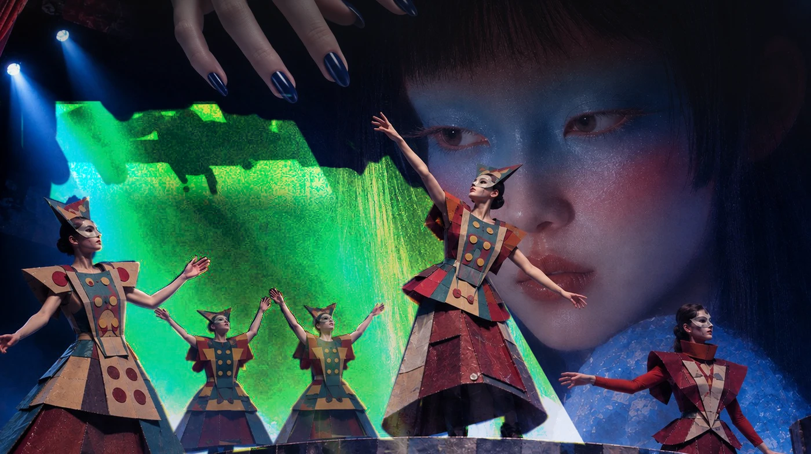
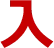
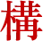
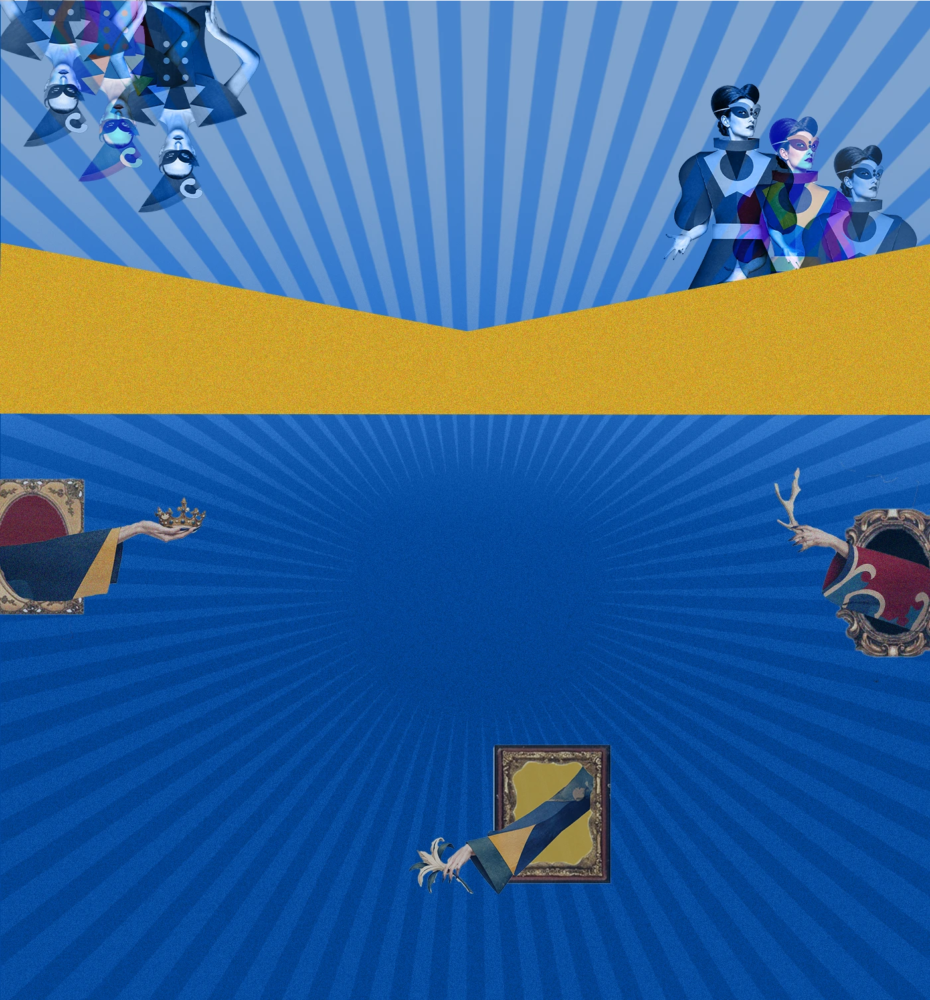
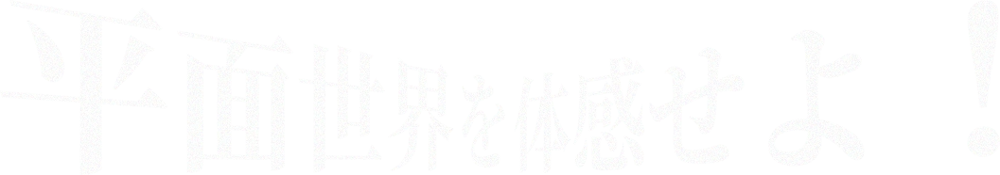
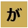
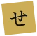
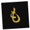
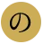
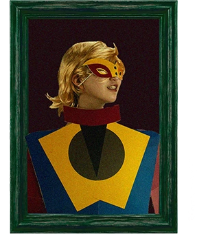
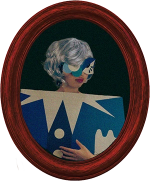

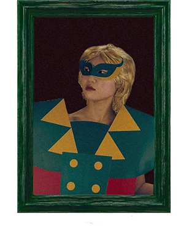
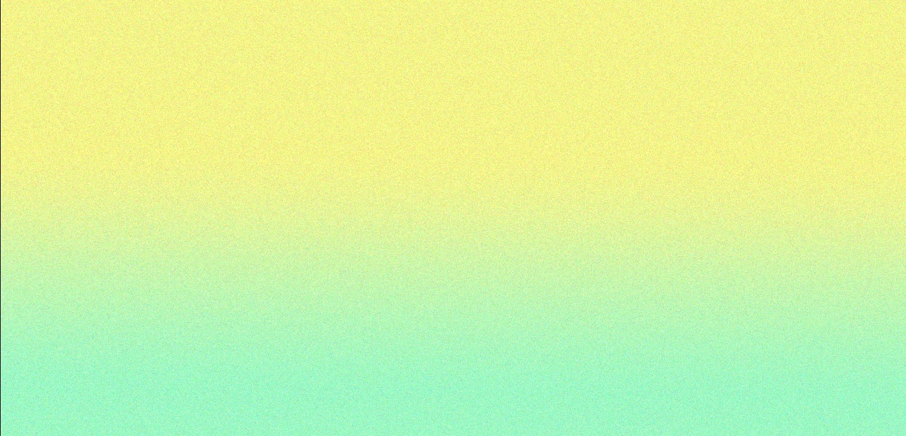
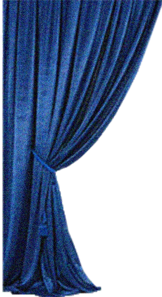
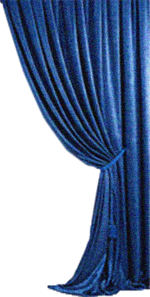
演劇「走れ、メロス。」神戸公演開催決定グッズ廻世座オリジナルグッズが発売決定朗読会廻世座初の朗読会が開催決定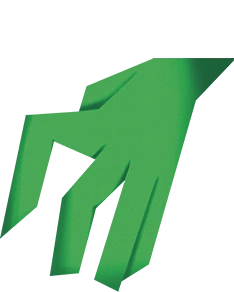
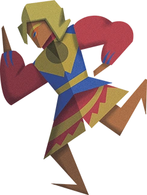
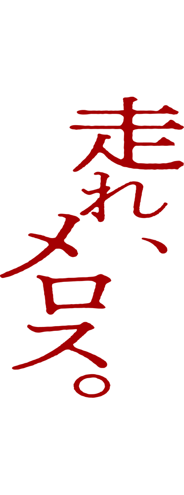
脚本：宮崎 颯太 演出：阿川 直哉
顔に触れて、過去のわたしたちをのぞいてください。 顔に触れて、過去のわたしたちをのぞいてください。 顔に触れて、過去のわたしたちをのぞいてください。 顔に触れて、過去のわたしたちをのぞいてください。 顔に触れて、過去のわたしたちをのぞいてください。 顔に触れて、過去のわたしたちをのぞいてください。 顔に触れて、過去のわたしたちをのぞいてください。 顔に触れて、過去のわたしたちをのぞいてください。 顔に触れて、過去のわたしたちをのぞいてください。 顔に触れて、過去のわたしたちをのぞいてください。 顔に触れて、過去のわたしたちをのぞいてください。 顔に触れて、過去のわたしたちをのぞいてください。
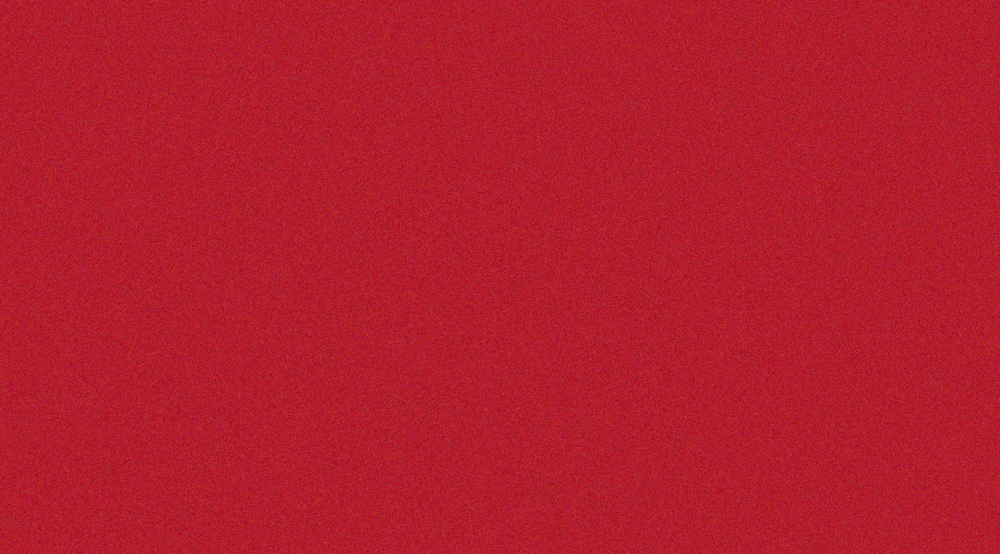
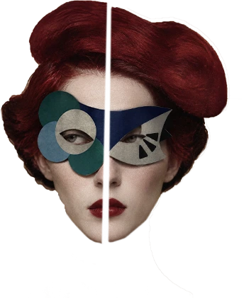
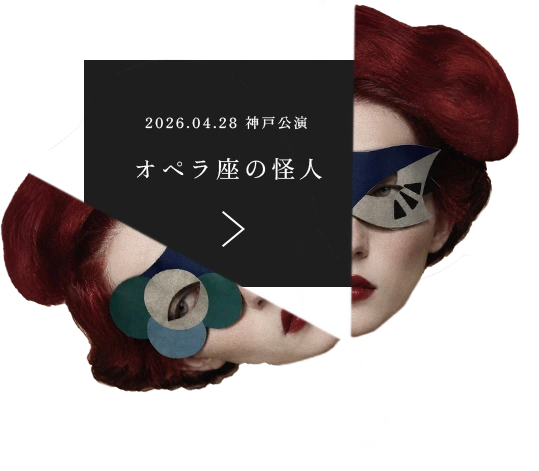
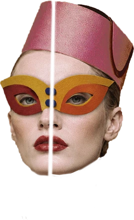
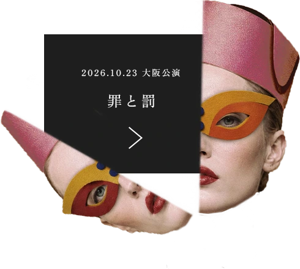
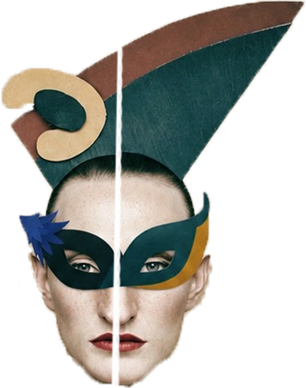
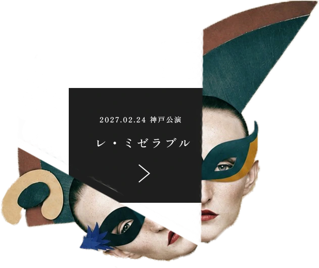
顔に触れて、過去のわたしたちをのぞいてください。 顔に触れて、過去のわたしたちをのぞいてください。 顔に触れて、過去のわたしたちをのぞいてください。 顔に触れて、過去のわたしたちをのぞいてください。 顔に触れて、過去のわたしたちをのぞいてください。 顔に触れて、過去のわたしたちをのぞいてください。 顔に触れて、過去のわたしたちをのぞいてください。 顔に触れて、過去のわたしたちをのぞいてください。 顔に触れて、過去のわたしたちをのぞいてください。 顔に触れて、過去のわたしたちをのぞいてください。 顔に触れて、過去のわたしたちをのぞいてください。 顔に触れて、過去のわたしたちをのぞいてください。
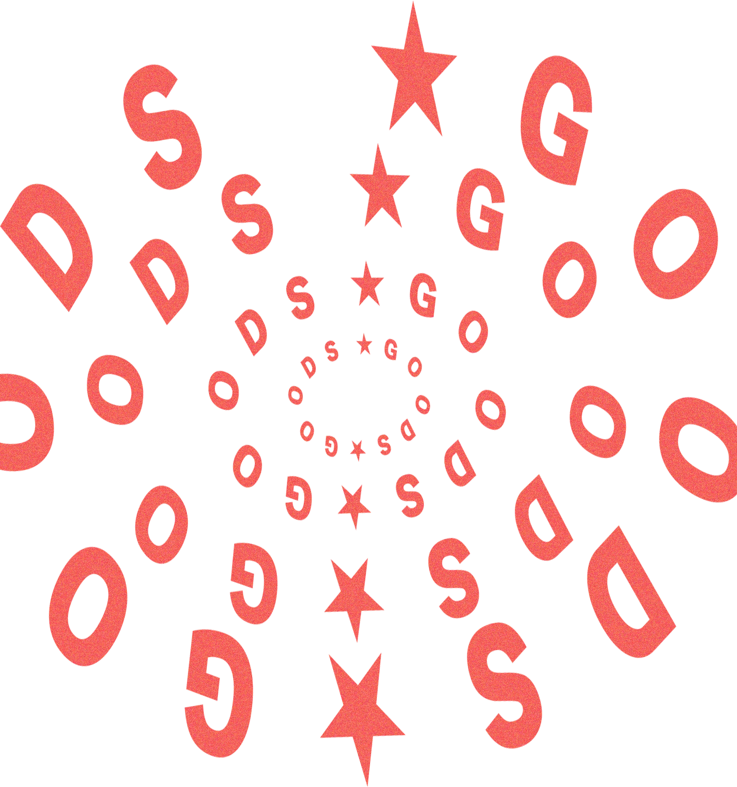
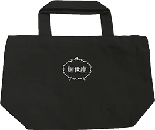
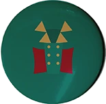
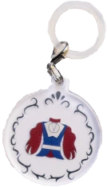
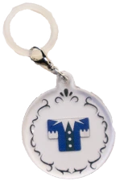
TEL：078-794-2112(代表)
FAX：078-794-5027
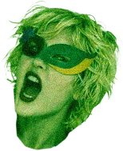
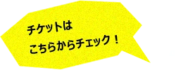